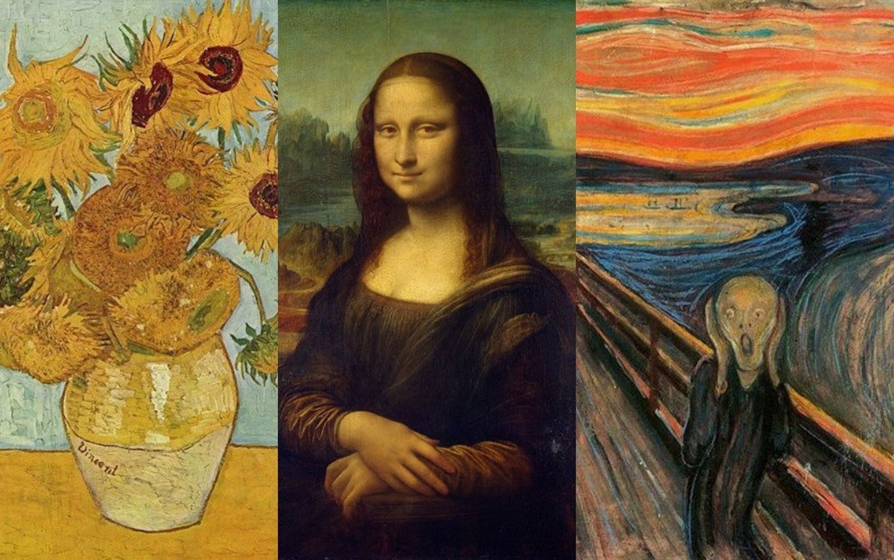
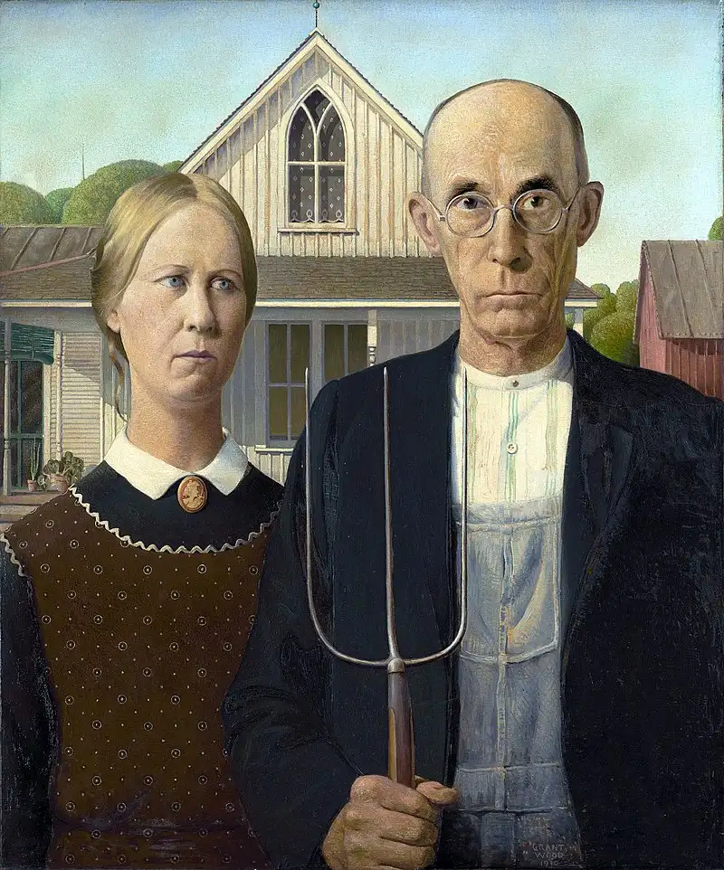
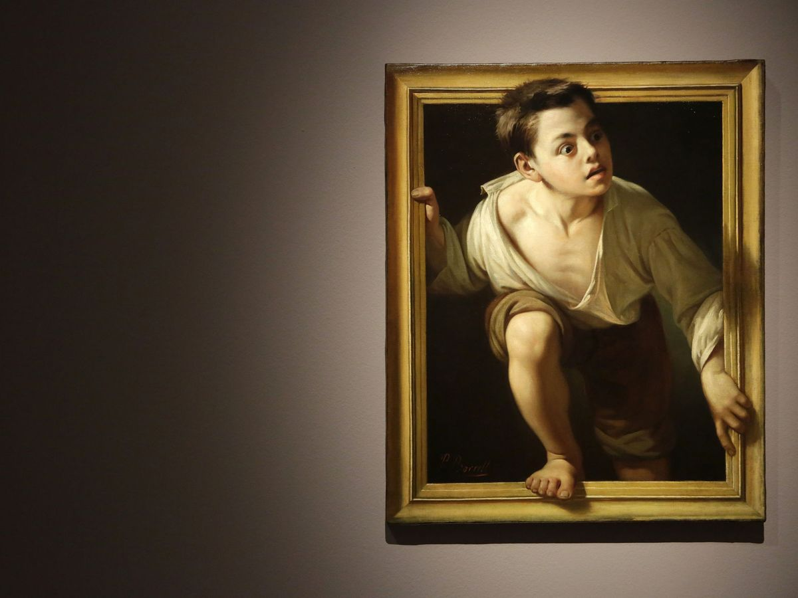
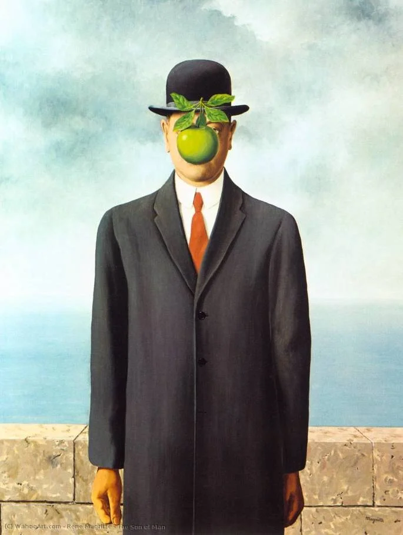
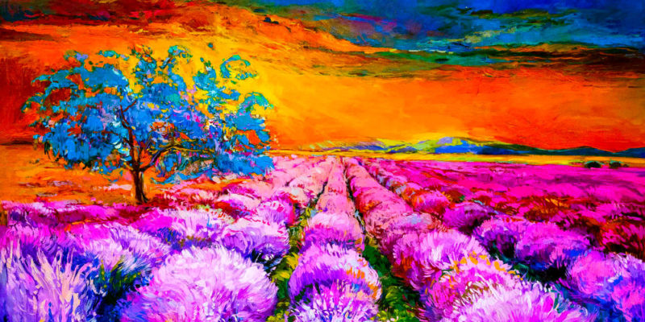
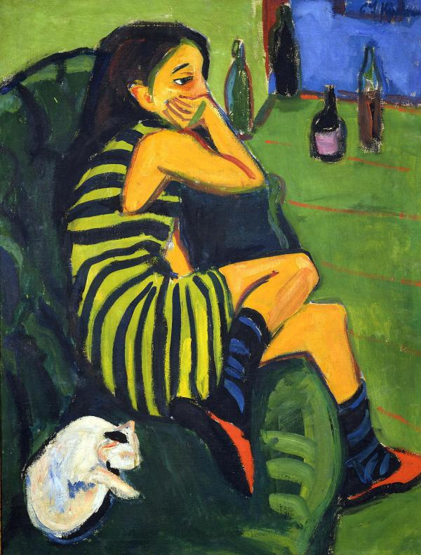

Tipo de artes
Los tipos de pinturas artísticas pueden clasificarse en base a cosas como el estilo y los materiales empleados. Pero cuando la gente piensa en tipos de pintura de arte, normalmente se refiere a los estilos o corrientes artísticas. Ha habido muchas a lo largo de la historia y cada una de ellas ha tenido su momento de gloria

Realismo
El realismo busca representar la vida de la forma más fiel. Para eso los pintores realistas usan hábilmente la pintura, el color y el tono. Mucha gente considera esta pintura como el “verdadero arte”.

Hiperrealismo
El hiperrealismo es un paso más allá del realismo. Se busca que la realidad sea con mayor fidelidad que la fotografía. La pintura hiperrealistas suele hacerse a partir de una fotografía.

Surrealismo
Las pinturas del surrealismo son a menudo ilógicas y tienen una calidad onírica, haciendo hincapié en el subconsciente. Sin duda Salvador Dalí es el pintor surrealista más famoso de la historia.

Impresionismo
El impresionismo se fija más en las formas que en los detalles. Por eso muestra sus preferencias por las pinturas de paisajes (de hecho los impresionistas prefieren pintar al aire libre) y le dan especial importancia a la luz.

Expresionismo
Como reacción al impresionismo nace el expresionismo. Se llama expresionismo porque busca reflejar la expresión de los sentimientos y emociones más que la realidad.
